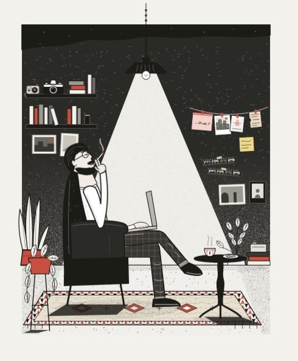

A photographic journal and space by The Image Club, bringing together photographers, their work and visual perspectives through a new theme every two months.مدونة فوتوغرافية من نادي الصورة، ومساحة تجمع أعمال المصوّرين وتجاربهم البصرية من خلال موضوع جديد في كل عدد يصدر كل شهرين.
Through recurring open calls, Diaries invites photographers to share photographs, stories and ideas inspired by each theme. A selection of contributions is then featured as an online photographic exhibition on The Image Club website.من خلال الدعوات المفتوحة، تتيح يوميات للمصورين مشاركة صورهم والنصوص والأفكار المرتبطة بالموضوع، تُختار مجموعة من المساهمات وتعرض ضمن معرض فوتوغرافي على موقع نادي الصورة.

01١. Why Diaries?لماذا يوميات؟
We believe photographic practice grows through consistency, experimentation and sharing. Diaries is more than a platform for showcasing images; it is an invitation to build a more active photographic practice: making photographs, revisiting archives, editing and selecting images, writing about one's work and sharing it with others.نؤمن أن الممارسة الفوتوغرافية تنمو عبر الاستمرار والتجربة والمشاركة. يوميات ليست مجرد مساحة لعرض الصور، بل دعوة للمصوّرين إلى بناء ممارسة أكثر استمرارية: التصوير، ومراجعة الأرشيف، واختيار الصور وتحريرها، والكتابة عنها ومشاركتها.
We also hope to encourage Syrian photographers to explore freely, experiment with new subjects and approaches, and develop their own visual perspectives without being confined by particular rules or expectations.كما نطمح إلى تشجيع المصوّرين السوريين على الاستكشاف بحرية، وتجربة موضوعات وأساليب جديدة، وتطوير رؤاهم البصرية الخاصة دون التقيد بقواعد أو تصوّرات محددة.
02٢. Who Is It For?لمن؟
Diaries is open to photographers of all experience levels, working in digital or analogue photography, and anyone looking to explore new ideas and share their work and perspective through photographs and words.يوميات مفتوحة للمصوّرين على مختلف مستويات خبراتهم، سواء بالتصوير الرقمي أو الأنالوغ، ولكل من يرغب في استكشاف أفكار جديدة ومشاركة أعماله ورؤيته من خلال الصورة والكلمة.
03٣. How Does It Work?كيف تعمل؟
Every two months, we introduce a new theme and open submissions to photographers.كل شهرين، نعلن عن موضوع جديد ونفتح دعوة المشاركة أمام المصوّرين.
We welcome photographs, written reflections and stories inspired by the theme. Submissions are reviewed and a selection of contributions is brought together in a digital edition, featured as an online photographic exhibition on The Image Club website.نستقبل الصور والنصوص والقصص المرتبطة بالموضوع، ثم تُراجع المشاركات ويُختار مجموعة من الأعمال لتُعرض ضمن إصدار رقمي على موقع نادي الصورة.
Each edition brings together different perspectives and experiences, giving photographers an opportunity to share their work and reach a wider audience.كل عدد يقدّم مجموعة من الرؤى والتجارب المختلفة، ويمنح المصوّرين فرصة مشاركة أعمالهم والوصول إلى جمهور أوسع.
A space to practise, explore and share what we see.مساحة للممارسة، والاستكشاف، ومشاركة ما نراه.
Follow along to discover the first edition's theme and upcoming open call.تابعونا لاكتشاف موضوع العدد الأول والمشاركة في الدعوة القادمة.